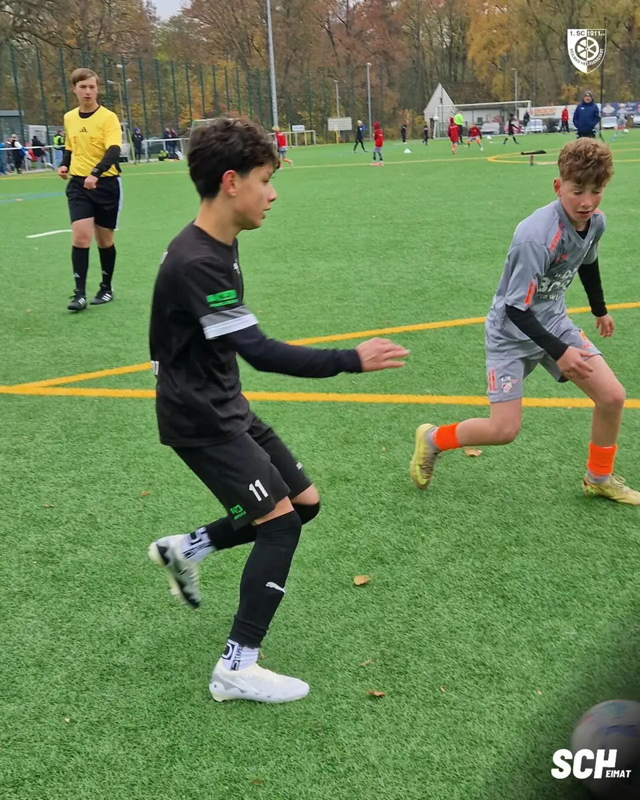
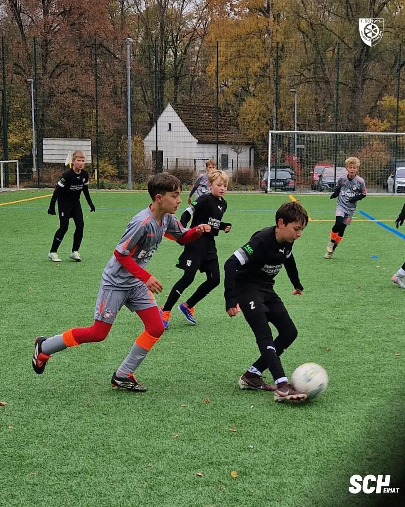
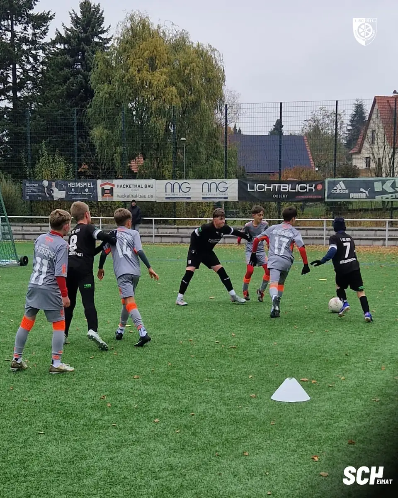
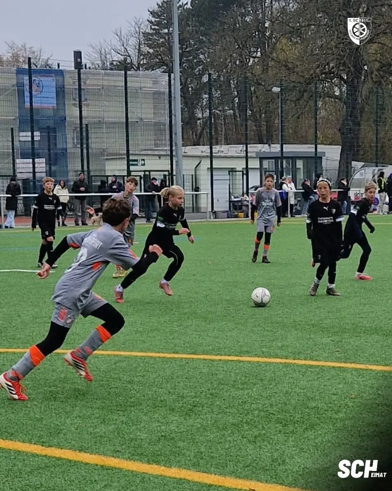

Vier Halbzeiten voller Einsatz: Seipel-Elf hält lange gegen Rot-Weiß mit
Am Samstagvormittag hatten die D1-Junioren des SCH in der Talenteliga die U12 des FC Rot-Weiß Erfurt zu Gast auf dem Kunstrasen am Gesundbrunnen. In der Halbzeitwertung stand am Ende ein 1:3 aus Sicht der Blau-Weißen. Das Ergebnis erzählt aber nur einen Teil des Vormittags. Die Mannschaft von Trainer Andreas Seipel bot dem Tabellenfünften lange einen offenen Kampf und zeigte vor allem zu Beginn, was in ihr steckt.
Ein besonderes Format
In der Talenteliga zählt nicht ein einzelnes Ergebnis über die volle Spielzeit. Gespielt werden vier Halbzeiten, verteilt auf zwei Teams pro Verein, und jede davon wird einzeln gewertet. So bekommen viele Spieler Einsatzzeit, und für die Tabelle zählt am Ende, wer die meisten Durchgänge für sich entscheidet. Genau deshalb lohnt sich ein genauer Blick auf die einzelnen Abschnitte.
Starker Auftakt mit einem Sieg
Die ersten beiden Halbzeiten gehörten zu den besten Phasen, die die Blau-Weißen in dieser Saison gezeigt haben. Eines der beiden SCH-Teams spielte mutig nach vorne, blieb in den Zweikämpfen dran und holte sich verdient den Sieg in seinem Durchgang. Damit war der erste Punkt in der Halbzeitwertung eingefahren, und am Spielfeldrand war die Freude entsprechend groß. Auch das zweite Team stand dem Gegner in nichts nach. Erfurt fand kaum einfache Wege zum Tor, weil die Abwehr kompakt verschob und die Räume eng machte. Hinter ihr hatte Torwart Aaron einen richtig starken Tag erwischt. Mehrfach entschärfte er gefährliche Abschlüsse mit tollen Paraden und hielt sein Team so lange im Spiel. Das Zusammenspiel zwischen ihm und seinen Vorderleuten funktionierte hervorragend, Bälle wurden sauber geklärt, Absprachen klappten. Am Ende fehlte nur ein Treffer: Mit 0:1 ging dieser Abschnitt denkbar knapp an die Gäste.
Die Kräfte lassen nach
Nach dem Wechsel in die zweiten beiden Halbzeiten merkte man den Jungs die Anstrengung an. Die Wege wurden länger, der Druck nach vorne ließ etwas nach, und Erfurt nutzte diese Phase, um mehr Spielanteile zu gewinnen. Aufgegeben hat sich aber niemand. Beide Durchgänge blieben eng, die Spielstände knapp, und bis zum Schluss stemmte sich die Seipel-Elf gegen die Niederlage. Belohnt wurde der Einsatz diesmal nicht: Beide Halbzeiten gingen an den Gast, womit das 1:3 feststand.
Mehr als nur ein Ergebnis
Wer nur auf die Tabelle schaut, sieht eine Mannschaft, die weiter auf ihre ersten Punkte wartet. Wer am Samstag am Platz stand, hat etwas anderes gesehen. Gegen eine der stärkeren Mannschaften der Liga waren die Blau-Weißen in drei von vier Durchgängen nah dran und haben einen davon gewonnen. Das Zusammenspiel wird von Woche zu Woche flüssiger, die Abläufe greifen immer besser ineinander, und die Entwicklung der Jungs ist deutlich zu erkennen. Genau darum geht es in diesem Alter. Jedes Spiel in der Talenteliga bringt Erfahrung gegen Gegner, die mit hohem Tempo und viel Qualität agieren. Dass die Mannschaft dabei immer wieder mithalten kann, macht Mut für die kommenden Wochen.
Gemeinsam weiter
Die Botschaft nach dem Spiel war deshalb klar: Kopf hoch, weiter fleißig trainieren, als Team zusammenhalten und an sich glauben. Der erste Halbzeitsieg gegen Erfurt zeigt, dass die Arbeit Früchte trägt. Wenn die Jungs die Energie aus den ersten beiden Durchgängen künftig auch über die gesamte Spielzeit auf den Platz bringen, werden die ersten Punkte nicht lange auf sich warten lassen.
Spieldaten
SC 1911 Heiligenstadt – FC Rot-Weiß Erfurt U12 2 1:3 (1:1)
SC 1911 Heiligenstadt
Mähler – Oberender – Perriello – Mika – Müller – Kobold – Drößler – Clasen – Mohibzadah – Hedrich – Fromm – Gerlach – Seipel – Eckardt
FC Rot-Weiß Erfurt U12 2
Schunke – Klüting – Kirr – Dreyße – Günther – Eichfeld – Störmer – Weber – Habermann – Huth – Schulz – Schneider – Heuschkel – Necke – Eckermann – Hartung
Schiedsrichter
Klingebiel



